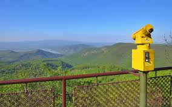
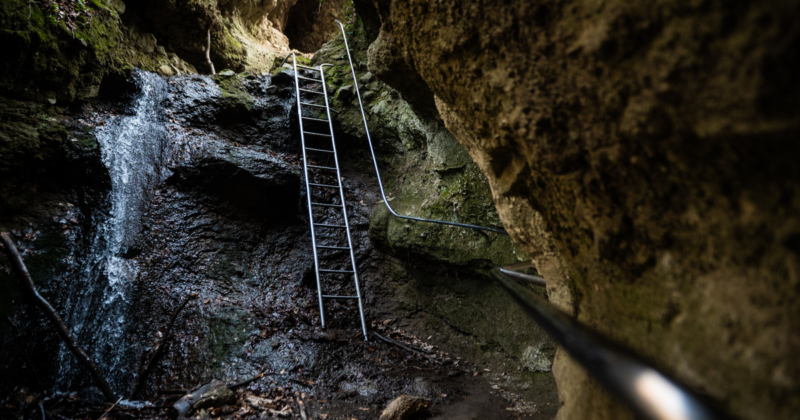
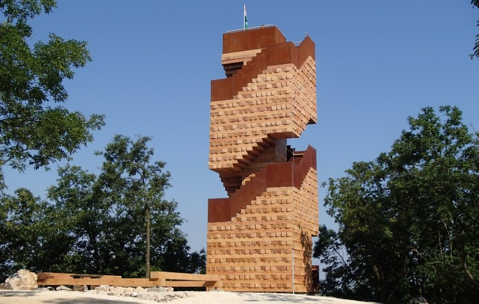

Dobogó-kő
Dobogókő a Visegrádi-hegység legmagasabb pontja, népszerű kirándulóhely, ahonnan lenyűgöző kilátás nyílik a Dunakanyarra. Dobogókő elsősorban kitűnő megközelíthetősége, és nagyszerű panorámát nyújtó kilátóhelyei miatt népszerű célpont, télen, megfelelő hóviszonyok esetén lesiklópályáját is sokan látogatják. A hegy, monumentális sziklákkal teletűzdelt északi oldalában vezető látványos Thirring-körút a hegység egyik legizgalmasabb túraútvonala. A csúcs körül üdülőkből álló települést találunk, amely manapság kissé lehangoló látványt nyújt, bezárt, elhagyatott, gazos szállodákkal, kevésbé gondozott hétvégi házakkal, bár az elmúlt pár évben kissé rendbe hozták a Pilisszentkereszthez tartozó telepet.
Rámszakadék
A Rám-szakadék egy izgalmas szurdokvölgy, ahol létrákon és láncokon keresztül lehet felfedezni a sziklás, vadregényes tájat. A Dunakanyar, és Magyarország legnépszerűbb túracélpontja a vadregényes, sziklás, szűk szurdokvölgy a Rám-szakadék. A korlátokkal és létrákkal biztosított keskeny, sziklás szurdok kihagyhatatlan kirándulás a túrázók körében. A 2013 őszére teljesen felújított és jóval biztonságosabbá tett útvonal páratlan, kalandos élményt nyújt, egyrészt a csodálatos természeti környezetnek, másrészt a hazánkban egyedülálló, izgalmas, mászós, kapaszkodós, létrázós turistaútnak köszönhetően.
Piliscsabai kilátó
A piliscsabai Boldog Özséb-kilátóból csodás panoráma tárul a látogatók elé, különösen naplementekor gyönyörű a látvány. A Piliscsaba felett magasló, Nagy-Kopasz (447 m) tetején, 2015 óta áll a dzsenga fajátékra hajazó, látványos Dévényi Antal-kilátó, melynek tornyából zavartalan körpanoráma tárul a Pilis és a Budai-hegység vonulataira. A kilátóhoz a legszebb útvonal a 10-es út menti Kopár csárdától kínálkozik, mely a hangulatos, fenyvesfoltokkal tarkított Zajnát-hegyeken keresztül vezet a Nagy-Kopaszra.